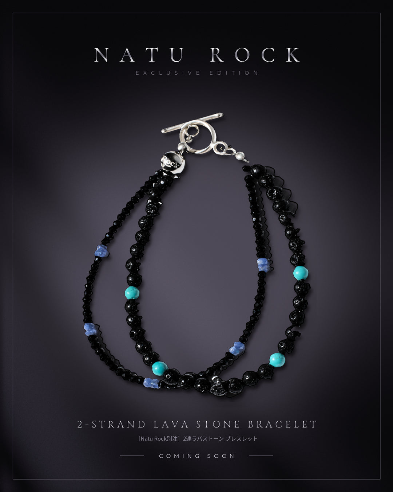
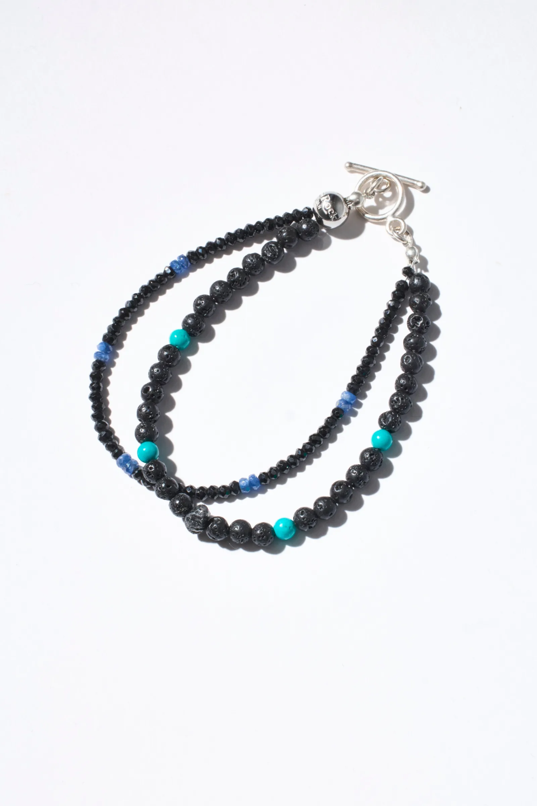
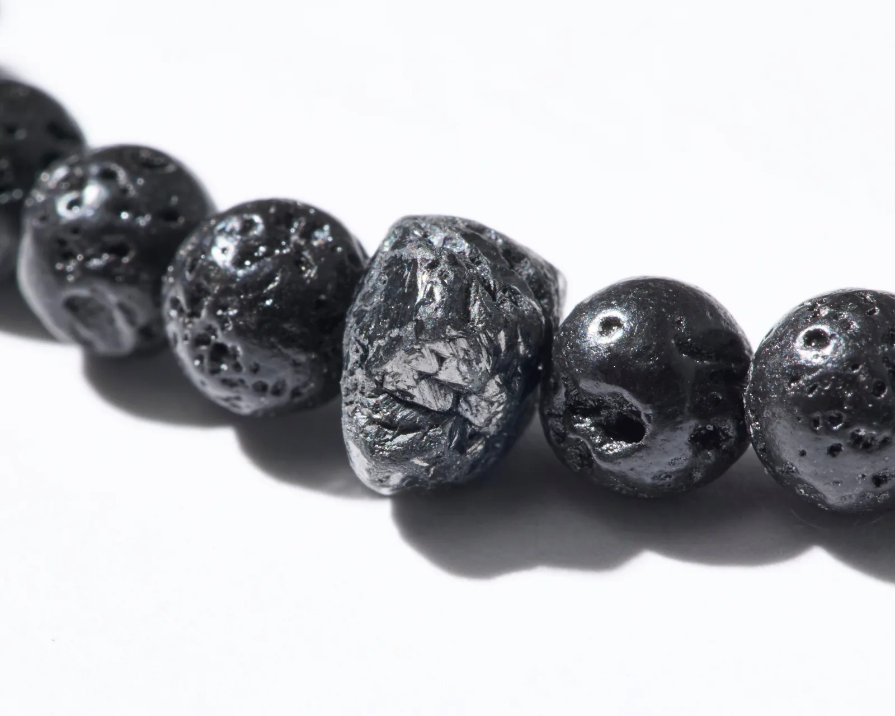
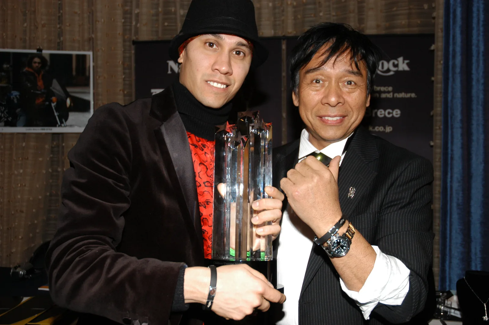
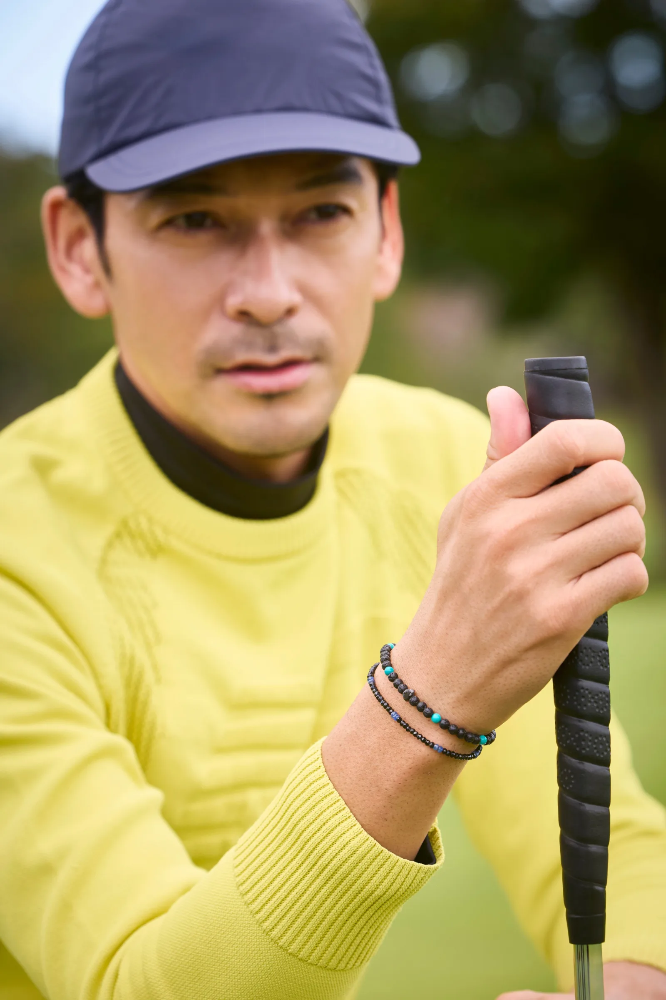
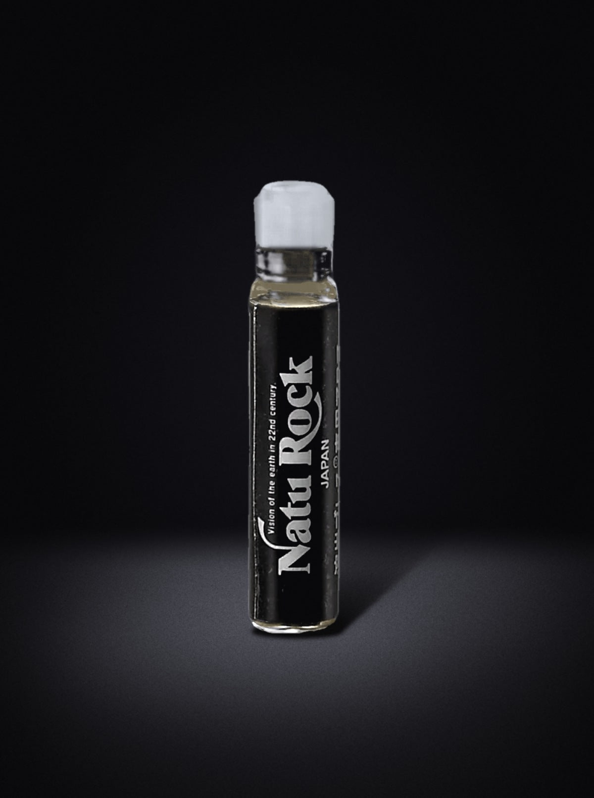
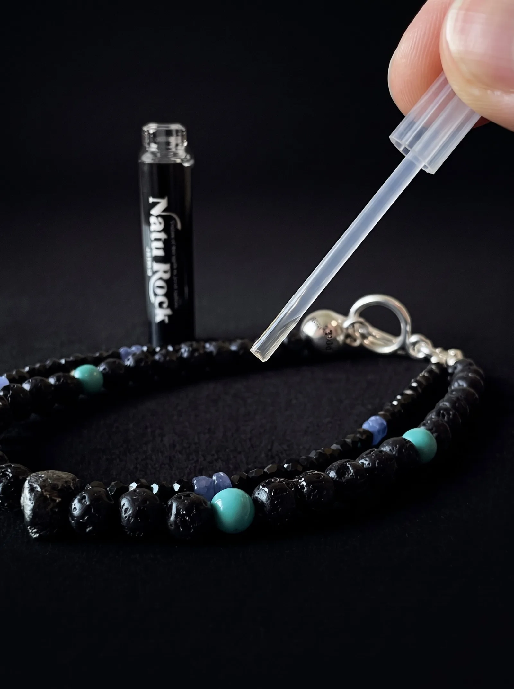

2026.11.24TUE. RELEASE
11月24日（火）発売
NATU ROCK EXCLUSIVE
前回即完売した「Natu Rock」とEVENの別注ブレスレットが、装いを新たに登場。今回は3連から2連へと変更し、手元にすっと馴染むスマートな仕上がりに。溶岩石とブラックスピネルをベースに、1カラットのブラックダイヤモンド原石を贅沢に配置。サファイアとターコイズが、シックな黒に程よい彩りを添える。さらに溶岩石には好みの香りをまとわせる楽しみも。大人の遊び心が詰まった一本だ。
［Natu Rock別注］
2連ラバストーン ブレスレット
MATERIALS
写真の丸印を押すと、その素材の説明が開きます

LAVA STONE
火山の大地から生まれた、無数の孔をもつ石。ゴツゴツとした無骨な質感が、このブレスレットの軸になる。孔にアロマオイルや香水を含ませれば、好きな香りを手元にまとえる。
BLACK SPINEL
細かくカットされた粒が光を返す、艶やかな黒。溶岩石の連と並べることで、マットと艶のコントラストが生まれる。2連のうち、細いほうの1本。
ROUGH BLACK DIAMOND
主役は1カラットの原石。存在感はありながら、あえて小ぶりの原石を選ぶことで、落ち着いた大人の雰囲気に。形は1点ごとに異なり、同じものはひとつとしてない。
SAPPHIRE
ブラックスピネルの連に点在する、深い青。黒を基調としたシックな配色に、鮮やかなアクセントを添える。
TURQUOISE
溶岩石の連に配した、小さな差し色。シャツやニットの袖口から覗いたとき、何気ない装いに洒落たニュアンスを添えてくれる。
CLASP
留め具はシルバー925のマンテル（T字バーとリングの留め具）。「Rock」の刻印が入ったロゴ玉はステンレス製。
溶岩石の無骨な質感に、艶やかなブラックスピネル。さらに1カラットのブラックダイヤモンド原石を主役に、サファイアとターコイズで彩りを添えた。天然石ならではの不揃いな表情こそ、量産品にはない魅力。ひと粒ごとの個性を楽しみたい。
※天然石を使用しているため、風合いは1点ごとに異なります。

主役は、1カラットのブラックダイヤモンド原石。
WORN BY ICONS
2009年にロサンゼルスで発表されて以来、Natu Rockは国内外の著名人にも愛用されてきた。溶岩という唯一無二の素材が、ステージやレッドカーペットの上でも静かな存在感を放つ。

※写真は過去にNatu Rockの製品を着用・手にした際のもので、本商品とは異なるモデルです。
STYLING
天然石のブレスレットは、重ねすぎず、さりげなく取り入れるのが大人の流儀。ブラックを基調とした2連仕様なら、シャツやニットとも好相性。ターコイズの小さな差し色が、何気ない装いに洒落たニュアンスを添えてくれる。主張しすぎない、その加減がいい。



AROMA
無数の孔をもち、水分を含みやすい溶岩石。その特性を生かして、アロマオイルや香水を含ませ、香りを楽しめるのがNatu Rockの特徴です。お気に入りの香りをまといながら、ラウンドや日常のひとときを心地よく。
HOW TO USE
※アロマオイルの取り扱いの詳細は、付属の別紙をご確認ください。
溶岩石の無骨さ、ブラックダイヤの存在感、EVEN EDITORIAL
ターコイズの鮮やかな差し色。
天然石ならではの表情も実にいい。
しかも香りまで楽しめるというから面白い。
ゴルフでも日常でも、気負わず着けられる。
スコアがよくなるかはさておき、
手元の洒落感は確実にアップする（笑）。
ABOUT
火山の大地から生まれた「溶岩」を素材にしたジュエリーブランド。一般的な天然石とは異なる溶岩の質感や表情を生かし、ほかの天然石と組み合わせて、日常のスタイルに取り入れやすいジュエリーを提案しています。2009年にアメリカ・ロサンゼルスで発表され、デザイン性と、溶岩にアロマを組み合わせた独自性で注目を集めました。
DETAILS
| 商品名 | ［Natu Rock別注］2連ラバストーン ブレスレット |
|---|---|
| 価格 | ¥41,800（税込） |
| 発売日 | 2026年11月24日（火） |
| サイズ | L：内周 約17cm LL：内周 約19cm |
| 素材 | 天然石（溶岩石、ブラックスピネル、ブラックダイヤ原石、サファイア、ターコイズ） ロゴ玉：ステンレス マンテル金具：シルバー925 |
| 重量 | 約15g |
| 付属品 | 専用アロマオイル |
| 製造国 | 日本 |
11.242026 TUE. RELEASE
［Natu Rock別注］2連ラバストーン ブレスレット
¥41,800tax in 11月24日（火）発売 ※商品ページは、11月24日（火）の発売開始後にご覧いただけます。